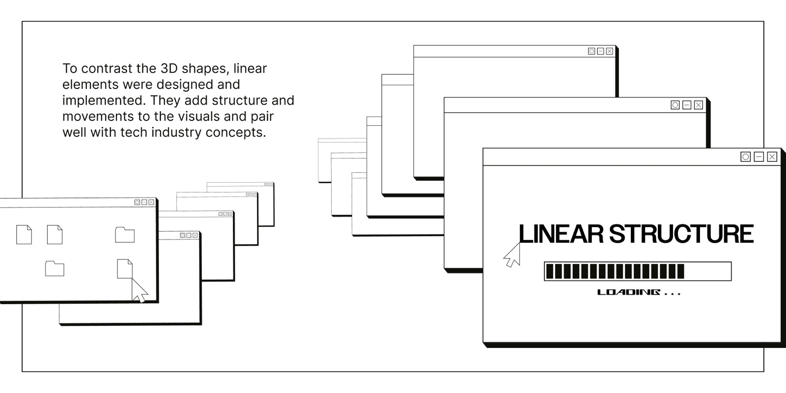
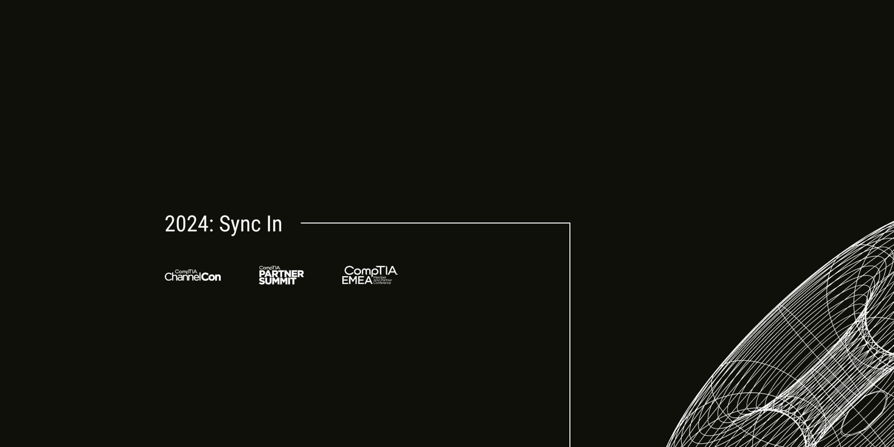
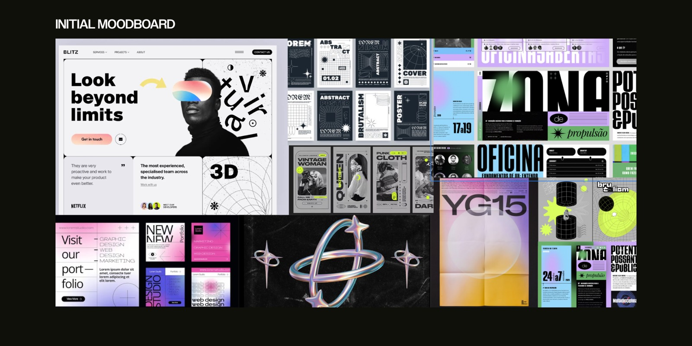
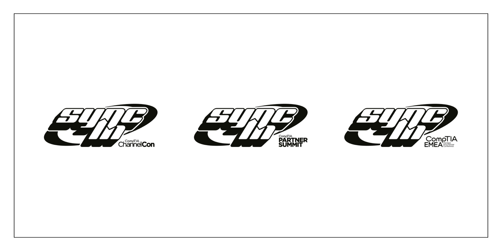
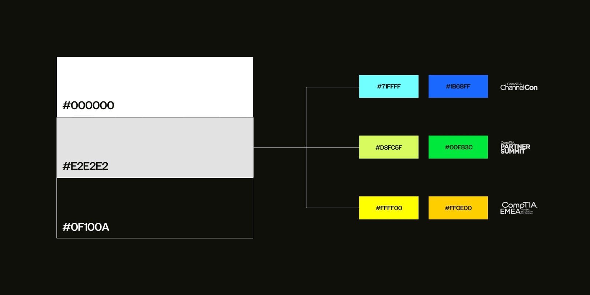
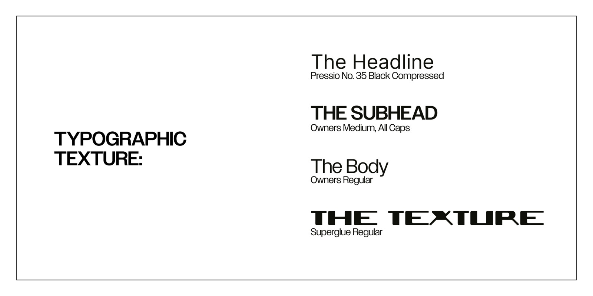
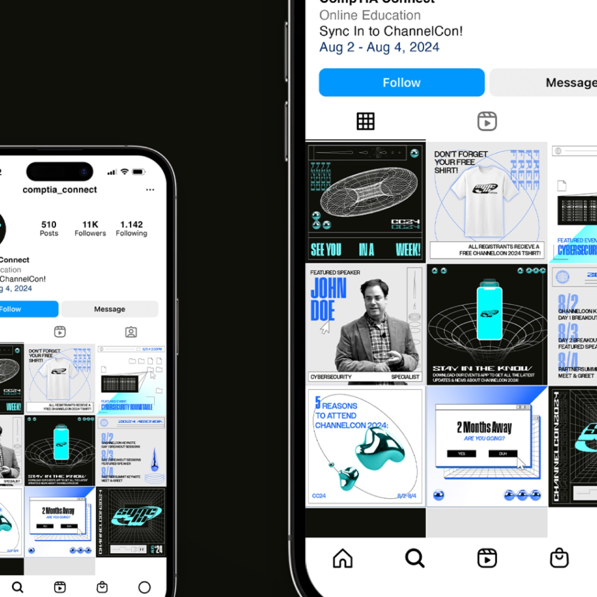

CompTIA ChannelCon 2024
Conference creative · Three events
A Y2K-inspired design system that carried one theme across three global conferences.

- Client
- CompTIA ChannelCon 2024
- Sector
- Professional Development & Technology
- Timeline
- 2024
- My role
- Design, with the 97 Switch team
- Services
- Event creative and design system
The project
Each year, CompTIA brings the IT channel together at ChannelCon, Partner Summit and EMEA, its London conference. After the success of 2023's Build the Impossible, CompTIA asked 97 Switch to create the theme for 2024. 97 Switch has been CompTIA's event creative partner since 2023.
The challenge
Each year's theme has to work across three events and every format from banners to social posts, and hand off cleanly to several production teams. After a successful first year, CompTIA needed a concept that felt fresh and captured the energy of meeting in person.
What I did
- 01
The concept: Sync In
Fuses two ideas: syncing data and sinking into a current. It evokes a connected community exchanging knowledge, and the immersion and forward movement of a great conference.
- 02
A Y2K-inspired design system
The revival of Y2K design gave the theme a look of structural synergy and technological connection, flexible enough for three events.
- 03
On-site and social assets
Banners, T-shirts, posters and social media, produced in step with the production teams that brought everything to life on site.
Project visuals







Results
- 3Conferences under one theme
- 2ndYear creating CompTIA's conference theme
Next project
Hotel EMC2